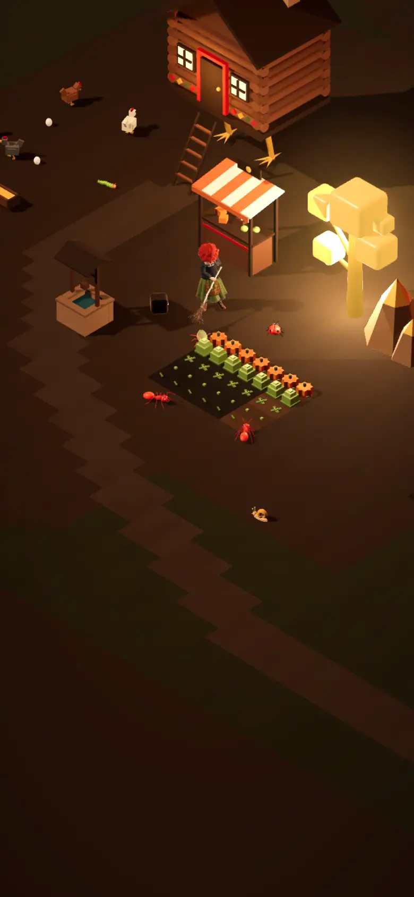
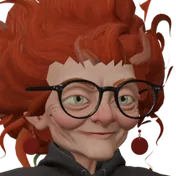
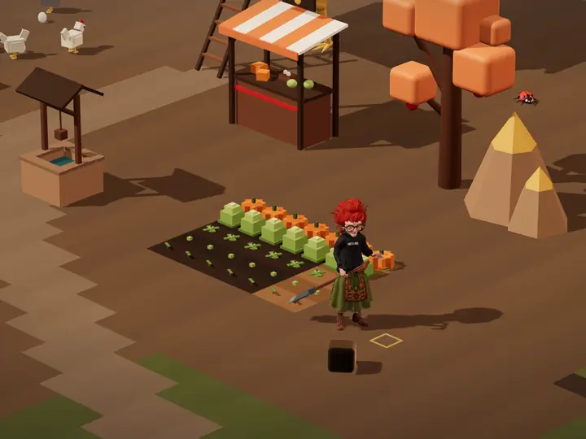
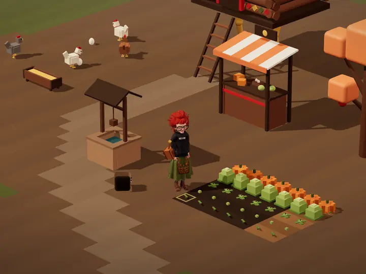
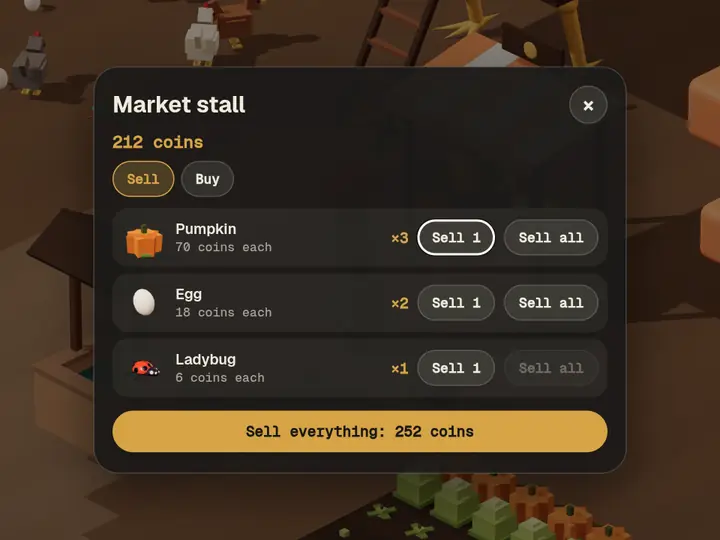
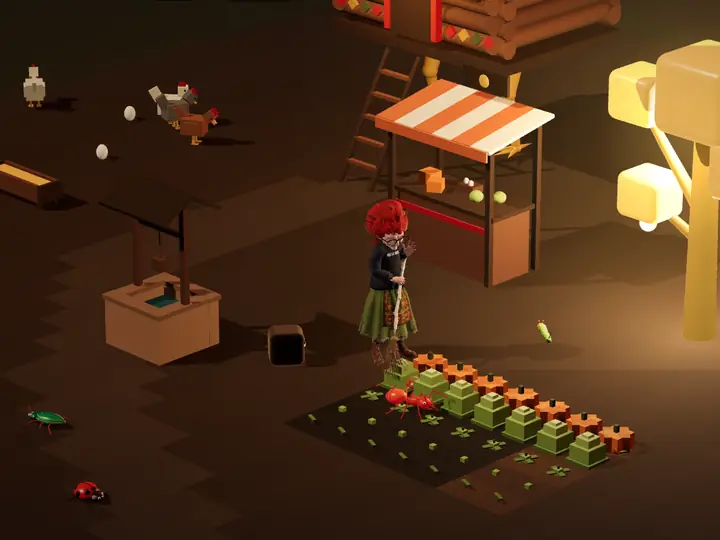

the legs were cheaper than stairs.
Yaga
Three hundred years of magic, and the pumpkins still want watering.
Yaga is a witch whose hut stands on chicken legs. She digs, plants, waters and harvests, sells at her market stall and keeps a few hens. When night falls the pests come for her crops, and she goes after them with her broom.
How a day goes
-

one more plot. my back says hi. Dig and plant
The shovel turns plain ground into farmland. Cabbage is ripe in three days, pumpkin in four and worth the wait.
-

one a day, or it sulks. Water
Each crop wants one drink a day. Only a watered crop grows overnight. The can runs dry, the well doesn't.
-

money for vegetables. what a world. Harvest and sell
Pull what is ripe, pick up the eggs, catch a bug or two. Coins from the stall buy seeds, more hens and a bigger can.
-

not my vegetables. not today. Broom, then bed
Red pests crawl in for crops that are dry or ripe. Swat them, then tap the hut to sleep. Morning tells you what the night did.
How to steer her
One rule: if the tool in her hand can do something there, she does it. If not, she just walks there. She does nothing unless you tell her. The furry black box follows her anyway, and comments.
| Phone or mouse | Keyboard | |
|---|---|---|
| Walk | Tap or click the ground | WASD or arrows |
| Use the tool | Tap or click the block | E or Space |
| Pick a tool | Tap the hotbar | 1 to 7 |